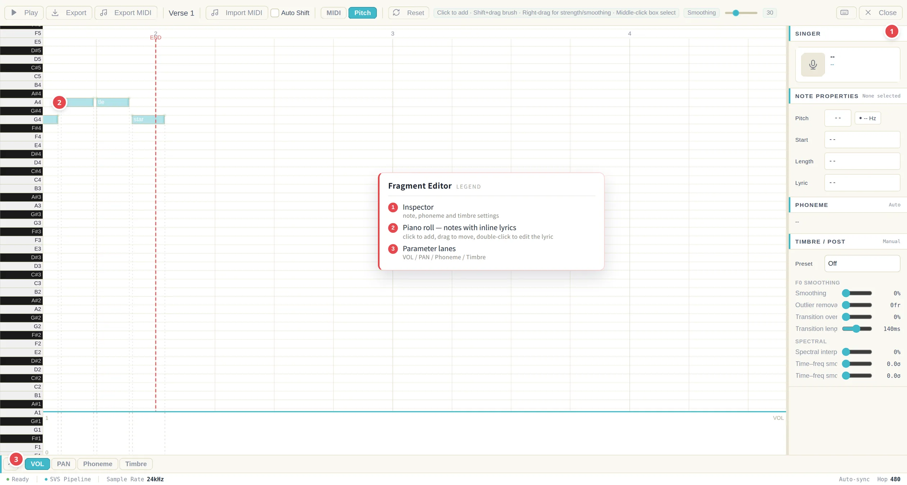
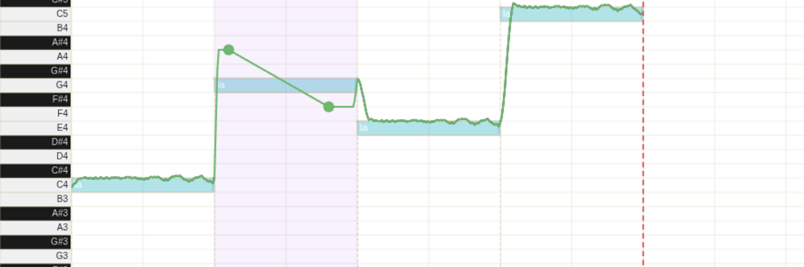
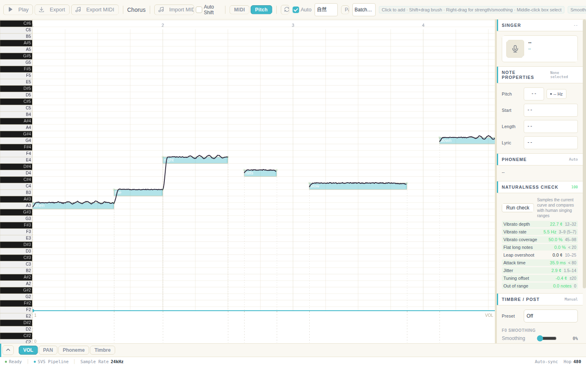
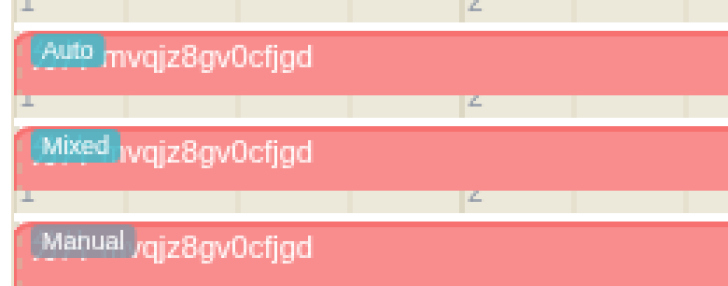
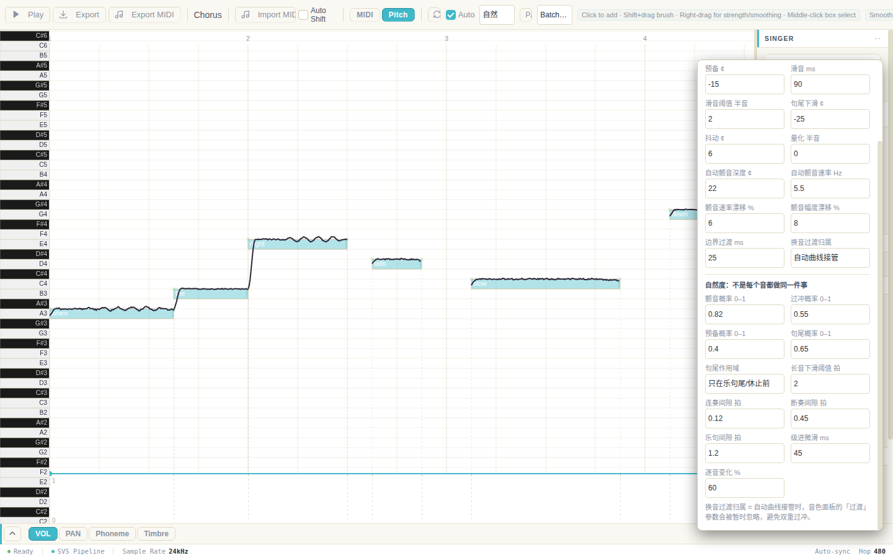
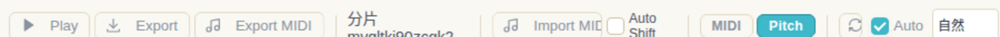
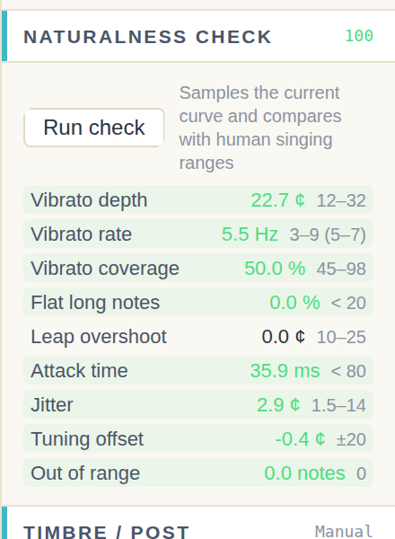
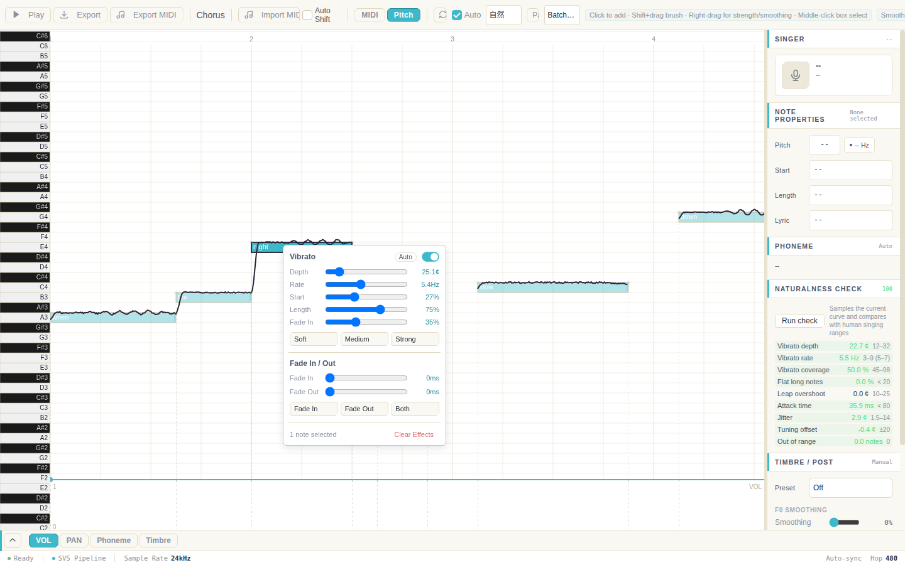

Fragment Editor 片段编辑器
The Fragment Editor is a full-featured piano-roll editor that opens when you double-click a fragment. It supports notes, lyrics, pitch curves, volume/pan envelopes, and phoneme-level editing.
片段编辑器是一个功能完整的钢琴卷帘编辑器，双击片段即可打开。它支持音符、歌词、音高曲线、音量/声像包络以及音素级编辑。


Opening the Fragment Editor 打开片段编辑器
- In the main window, click the + button on a singer row to add a new fragment. The fragment is created at the current scroll position.在主窗口中，点击歌手行的 + 按钮添加新片段。片段会在当前滚动位置创建。
- Double-click a fragment to open it in the Fragment Editor.双击片段即可在片段编辑器中打开。
Auto-Sync to Main Window 自动同步到主窗口
Edits in the Fragment Editor are automatically synced to the main window — there is no Save button. After any edit (MIDI notes, lyrics, pitch curve, envelopes, phoneme parameters), a 500ms debounced auto-save fires and pushes the updated fragment data to the main window.
片段编辑器中的编辑会自动同步到主窗口——没有保存按钮。任何编辑（MIDI 音符、歌词、音高曲线、包络、音素参数）后都会触发 500ms 防抖自动保存，将更新后的片段数据推送到主窗口。
- Ctrl+S cancels the debounce timer and pushes the update immediately (force-sync). This is optional — the auto-save already handles sync.Ctrl+S 取消防抖计时器并立即推送更新（强制同步）。这是可选操作——自动保存已处理同步。
- The Close button auto-syncs before closing the window.关闭按钮在关闭窗口前会自动同步。
- When you load a new
.sxsprojfile, all open Fragment Editor windows close automatically to prevent stale references.加载新的.sxsproj文件时，所有打开的片段编辑器窗口会自动关闭，以避免引用失效。
Window Layout 窗口布局
- Toolbar (top): Play, Export, Import MIDI, mode switching, close.工具栏（顶部）：播放、导出、导入 MIDI、模式切换、关闭。
- Piano keys (left): Vertical pitch reference.钢琴键（左侧）：纵向音高参考。
- Piano roll (center): The main editing canvas.钢琴卷帘（中部）：主编辑画布。
- Inspector (right): Shows properties of the selected note or singer info.检查器（右侧）：显示选中音符的属性或歌手信息。
- Parameter panel (bottom): VOL, PAN, Phoneme, and Timbre (F0 / spectral post-processing) lanes.参数面板（底部）：VOL、PAN、Phoneme 与音色（F0 / 频谱后处理）轨道。
- Status bar (bottom): Shows a Ready indicator with the SVS Pipeline label, the model sample rate (24 kHz), hop size (480), and the auto-sync indicator.状态栏（底部）：显示就绪指示灯与 SVS Pipeline 标识、模型采样率（24 kHz）、hop size（480）和自动同步指示。
Stopping synthesis — there is no separate cancel button: the Play button itself becomes Stop as soon as playback starts, and clicking it stops playback and abandons the synthesis. Before the first audio chunk plays, the button reads "Synthesizing" and is temporarily disabled. Cancellation is cooperative: the SVS worker exits GPU inference at safe checkpoints between diffusion steps instead of force-terminating, preventing the D3D device-hung crash that occurred with the old force-terminate approach.
停止合成——没有单独的取消按钮：播放一开始 Play 按钮本身即变为 Stop，点击它即可停止播放并放弃合成。在首个音频块播放前，按钮显示"合成中"并暂时禁用。取消为协作式：SVS worker 在扩散步之间的安全检查点退出 GPU 推理，而非强制终止，避免了旧的强制终止方式导致的 D3D 设备挂起崩溃。
Viewport-sized canvas — the timeline canvas now uses a viewport-sized backing store with scroll transform, fixing the Chromium canvas size limit that caused rendering issues on long MIDI projects. This allows smooth scrolling and rendering regardless of project length.
视口尺寸画布——时间线画布现在使用视口尺寸的后备存储加滚动变换，修复了 Chromium 画布尺寸限制导致长 MIDI 项目渲染异常的问题。无论项目长度如何，都能流畅滚动和渲染。
MIDI Editing MIDI 编辑
Adding Notes 添加音符
- Click on empty space in the piano roll to create a note.在钢琴卷帘空白处点击创建音符。
- Drag while clicking to set the initial note length.点击时拖动设置初始音符长度。
- Notes snap to the beat grid based on the current zoom level.音符会根据当前缩放级别吸附到节拍网格。
Selecting Notes 选择音符
- Click a note to select it (deselects others).点击音符选中它（取消选中其他）。
- Ctrl+click to toggle a note's selection state.Ctrl+点击切换音符的选中状态。
- Shift+click to add a note to the current selection.Shift+点击将音符添加到当前选择。
- Middle-click drag to box-select notes within a rectangle.中键拖动框选矩形范围内的音符。
- Shift+middle-click drag to append a box selection.Shift+中键拖动追加框选。
- Ctrl+A to select all notes. Escape to deselect all.Ctrl+A 全选。Escape 取消全选。
Moving and Resizing 移动与调整长度
- Drag a selected note to move it.拖动选中音符可移动。
- Drag the right edge of a note to change its duration.拖动音符的右边缘可改变时长。
- Arrow keys ↑/↓: Move selected notes by one semitone.方向键 ↑/↓：将选中音符移动一个半音。
- Arrow keys ←/→: Move selected notes by one time unit.方向键 ←/→：将选中音符移动一个时间单位。
- Shift+↑/↓: Move by one octave (12 semitones).Shift+↑/↓：移动一个八度（12 个半音）。
- Shift+←/→: Move by one beat.Shift+←/→：移动一个节拍。
Deleting and Duplicating 删除与复制
- Select notes and press Delete to delete.选中音符后按 Delete 删除。
- Select notes and press Ctrl+D to duplicate. Duplicates are placed after the originals.选中音符后按 Ctrl+D 复制。副本放在原音符之后。
Lyrics and Phonemes 歌词与音素
Editing Lyrics 编辑歌词
- Double-click a note to edit its lyric inline. Type the lyric and press Enter to confirm, or Escape to cancel.双击音符可内联编辑歌词。输入歌词后按 Enter 确认，或 Escape 取消。
- You can also edit lyrics in the Inspector panel's lyric field on the right side.也可在右侧检查器面板的歌词字段中编辑。
Lyric Input Rules 歌词输入规则
| Language语言 | Input输入 | Processing处理方式 |
|---|---|---|
| Chinese中文 | Chinese characters (e.g., 你好世界); optional tone digit 1–5 after a character forces that tone (e.g., 你2 好3)汉字（如 你好世界）；可在汉字后加数字 1–5 强制指定声调（如 你2 好3） |
Uses pinyin-pro to convert characters to Pinyin (with the forced tone if a digit is present), then to zh_* phonemes使用 pinyin-pro 将汉字转为拼音（如有数字则用其覆盖声调），再转为 zh_* 音素 |
| English英语 | English words (e.g., hello, love)英文单词（如 hello、love） |
Built-in CMU pronunciation dictionary (126,000 words). Unknown words fall back to letter-by-letter estimation.内置 CMU 发音词典（12.6 万词）。未知单词回退到逐字母音素估算。 |
| Continuation连音 | Half-width dash -半角连字符 - |
Slur / continuation — re-sings nothing, extends the previous note's phoneme (noteType 3)连音（延续）——不重新起音，延续前一个音符的音素（noteType 3） |
| Rest休止 | Empty lyric, or the literal token <SP>空歌词，或字面 token <SP> |
Silence. <SP> is the silence phoneme (noteType 1); an empty lyric is also a rest and sings as silence too — with or without a pitch. (New notes start out with the default lyric la; clear the lyric to make a note silent.)静音。<SP> 即静音音素（noteType 1）；空歌词同样按休止处理——无论有无音高都唱静音。（新建音符的默认歌词是 la；把歌词清空即可让该音符静音。） |
| Aspiration吸气 | The literal token <AP>字面 token <AP> |
Audible breath / aspiration — the note keeps its pitch slot but is sung as an unvoiced breath (noteType 2, f0 = 0)可听见的吸气 / 气声——音符保留音高位置，但以无声带振动的气声演唱（noteType 2，f0 = 0） |
Empty lyric is not a slur. Only the dash - marks a continuation note. An empty lyric is a rest and always sings as silence, whether or not the note has a pitch. Mixing the two up is the most common cause of "the model sang through my rest" bugs.
空歌词不是连音。只有连字符 - 表示延续音符。空歌词表示休止——无论音符有无音高，都按静音处理。混淆这两者是"模型在我的休止段照样唱"这类问题最常见的原因。
Slur (Continuation) Notes 连音（延续）音符
A slur note continues the previous note's sound without re-attacking. To create a slur, double-click a note and type a half-width dash -; the editor stores it as an internal continuation state. The note still displays -, but that character is never sent to the model as a lyric. Do not use an empty lyric for a slur — an empty lyric means rest.
连音音符延续前一个音符的发音而不重新起音。双击后续音符并输入半角连字符 -，编辑器会把它保存为内部连音状态；音符上仍显示 -，但该字符不会作为歌词送入模型。不要用空歌词表示连音——空歌词表示休止。
Note Types (noteType) 音符类型（notetype）
Every note carries an internal note type that tells the model how to treat it. You never set it directly — it is derived from the lyric you type. The three values are:
每个音符都带有一个内部音符类型，告诉模型该如何处理它。你无需直接设置——它由你输入的歌词自动推导。三个取值如下：
| noteType音符类型 | Triggered by触发条件 | What the model does模型行为 |
|---|---|---|
1 — SP (silence)— 静音 |
Lyric <SP>, an empty lyric (whether or not the note has a pitch), or a note with pitch 0歌词为 <SP>、空歌词（无论该音符有无音高），或音高为 0 的音符 |
Silence phoneme <SP>; no pitch is sung, the frame is unvoiced (f0 = 0)静音音素 <SP>；不唱音高，该帧为清音（f0 = 0） |
2 — normal (sung)— 普通（演唱） |
Any real lyric: Chinese characters, English words, kana, or <AP> — including the default la every new note starts with任意真实歌词：汉字、英文单词、假名，或 <AP>——包括每个新音符默认带的 la |
Sung normally from the lyric's phonemes按歌词音素正常演唱 |
3 — slur (continuation)— 连音（延续） |
Lyric -歌词为 - |
Extends the previous note's phoneme without a new attack — use it for one syllable held over several notes延续前一个音符的音素而不重新起音——用于一个音节跨越多个音符的情况 |
Why it matters: a mis-typed note type changes what the model sings, not just how it looks. A slur typed as an empty lyric becomes a rest; a rest typed as a lyric makes the model sing through the silence. The phoneme editor (press 5) shows the phoneme sequence the model will actually receive, so you can verify a note landed on the type you intended.
为什么重要：音符类型输错会改变模型唱出的内容，而不只是显示效果。连音输成空歌词会变成休止；休止段输了歌词会让模型在静音处发声。音素编辑器（按 5）会显示模型实际收到的音素序列，可用来核对音符是否落到了预期类型上。
Special Phonemes: Aspiration <AP> and Silence <SP> 特殊音素：吸气 <AP> 与静音 <SP>
Two lyrics are not text at all — they are phonemes in the model's own vocabulary. Type them literally, including the angle brackets, exactly as shown below.
有两个"歌词"不是文本，而是模型音素表里的音素。请按字面输入，包括尖括号，与下方写法完全一致。
| Token符号 | Name名称 | Sounds like听感 | Model treatment模型处理 |
|---|---|---|---|
<SP> |
Silence phoneme静音音素 | Nothing — a silent frame无声——静音帧 | noteType 1, pitch slot ignored, f0 = 0 (unvoiced)noteType 1，忽略音高，f0 = 0（清音） |
<AP> |
Aspiration phoneme吸气音素 | An audible breath / inhale before a phrase乐句前可听见的吸气 / 换气声 | noteType 2 (sung), but f0 = 0 — it is voiced as a breath, not as silencenoteType 2（演唱），但 f0 = 0——以气声发出，而非静音 |
- Use
<SP>where the singer should be silent (rests, gaps between phrases).在歌手应当静默的位置使用<SP>（休止、乐句间的空隙）。 - Use
<AP>where you want a real breath sound — for example on a short note right before a phrase starts. It makes the take sound performed rather than machine-assembled.在需要真实换气声的位置使用<AP>——例如乐句起始前的短音符。它会让成品听起来像真实演唱而非机器拼接。 - Both tokens are skipped when exporting LRC lyrics — they never appear in the lyric file.导出 LRC 歌词时这两个 token 都会被跳过，不会出现在歌词文件中。
- A
<AP>note is never treated as a rest by the long-gap logic — it is audible content, so it stays inside the inference region.长空档逻辑绝不把<AP>音符当作休止——它是可听见的内容，会保留在推理区间内。
Long Gaps Are Handled Automatically 长空档自动处理
You do not need to split a long song into pieces by hand. When a fragment contains a long rest, SXSEditor removes it from the neural inference and stitches the result back onto the timeline:
无需手动把长歌曲切段。当分片中含有较长休止时，SXSEditor 会把它从神经推理中剔除，再把结果拼回时间线：
- Rests of 1.5 s or longer are excluded from inference — the model never spends time "singing" silence. Shorter rests stay in as timing context.1.5 秒及以上的休止会被排除出推理——模型不会把时间花在"唱"静音上。更短的休止会保留，作为时序上下文。
- 150 ms of rest context is kept on both sides of the split, so consonant releases and the next attack still see a natural
<SP>-like boundary.切口两侧各保留 150 ms 休止上下文，使辅音释放与下一次起音仍能拍到自然的<SP>式边界。 - Any remaining audio longer than 20 s is split into segments of 8–20 s with a 2 s overlap between neighbours, then crossfaded back together.剩余超过 20 秒的音频会被切为 8–20 秒的分段，相邻分段重叠 2 秒，再交叉淡入淡出拼回。
- The gap you hear in playback is exactly the gap in your score — splitting never shifts note positions.播放中听到的空档与谱面上的空档完全一致——分段不会改变音符位置。
Because Extrapolated Euler and STORK-2 keep state across diffusion steps, that state resets at every segment boundary. For long fragments, Euler or Heun is the safer sampler choice (see Diffusion Sampler).
由于 Extrapolated Euler 与 STORK-2 会跨扩散步保留状态，该状态会在每个分段边界重置。因此长分片更推荐 Euler 或 Heun（见扩散求解器）。
Kanji / Kana Auto-Grouping 汉字 / 假名自动分组
When a fragment already contains Japanese kana (hiragana or katakana) in any note's lyric, every single-character kanji note in the same fragment is automatically treated as Japanese and split into an ordered group of kana notes. This avoids the ambiguity of using the same CJK ideographs for both Chinese and Japanese within one fragment.
当分片中任一音符的歌词已包含日语假名（平假名或片假名）时，同一分片内的所有单字汉字音符会被自动识别为日语，并按顺序切分为一组假名音符。这避免了在同一分片中用同一套 CJK 汉字同时表示中文和日语的歧义。
- Visual bracket — a horizontal bracket is drawn above the group with the original kanji displayed in the middle, so you can always see which kana belong to which kanji.连接线——分组上方绘制水平连接线，中间显示原汉字，便于辨识哪些假名属于哪个汉字。
- Strict ordering — the converted kana keep their dictionary order. You cannot insert other MIDI notes inside a group's time span.严格顺序——转换后的假名保持字典顺序。分组时间范围内不允许插入其他 MIDI 音符。
- Movement — kana notes can be moved in pitch and time, but they cannot be deleted individually.移动——假名音符允许音高与左右移动，但不允许单独删除。
- Whole-group deletion — deleting any kana in a group removes the entire group (all kana in that kanji).整组删除——删除分组内任一假名即删除整个分组（该汉字的所有假名）。
- Right-click toggle — right-click the bracket or the kanji label to open the Kanji Settings menu directly. Choose Set as Chinese to merge the whole group back into a single kanji note (length = total group span, pitch = right-clicked note's pitch); choose Set as Japanese to split it again. Right-clicking a note body (a kana inside a group, or a single ungrouped kanji) opens the note context menu, which contains a Kanji Settings button that opens the same Kanji Settings menu — so the Chinese/Japanese toggle remains reachable from any kanji/kana note.右键切换——右键点击连接线或汉字标签可直接打开汉字设置菜单。选择设为中文可将整个合并回单个汉字音符（长度 = 分组总跨度，音高 = 右键音符的音高）；选择设为日语可再次切分。右键音符本体（分组内的假名，或单个未分组汉字）会打开音符右键菜单，其中包含汉字设置按钮，点击可打开同样的汉字设置菜单——因此从任意汉字 / 假名音符仍可进入中 / 日切换。
- Manual override persists — once you manually set a kanji to Chinese, it will not be auto-split again even if the fragment still contains kana.手动覆盖持久化——一旦手动将某汉字设为中文，即使分片仍含假名，也不会再被自动切分。
Pitch Curves 音高曲线
Pitch curves are stored as absolute MIDI pitches: wherever the curve covers a frame, that pitch replaces the frame outright — it is not an offset added on top of the note. Inside the manual range, frames before the first / after the last anchor hold the first / last anchor value (they do not jump back to the note pitch — that used to produce an audible step of up to 12 semitones at the tail). Outside the manual range the auto layer takes over. For per-note vibrato, see Note Effects: Vibrato & Fade.
音高曲线的锚点存的是绝对 MIDI 音高：曲线覆盖到的帧直接采用该音高，不是在音符音高上叠加偏移。在手动范围内，首个/末个锚点之外的时间会保持首/末锚点的值（不再跳回音符音高——旧行为会在尾部造成最多 12 半音的突变）。手动范围之外由自动层接管。逐音符颤音请见音符效果：颤音与渐强渐弱。
Switch to Pitch mode by pressing 2 or clicking the Pitch button in the toolbar.
按 2 或点击工具栏的 Pitch 按钮切换到音高模式。
Anchor Points 锚点
- Click to add an anchor point on the pitch curve.点击在音高曲线上添加锚点。
- Drag an anchor to move it (changes both time and pitch offset).拖动锚点可移动（同时改变时间和音高偏移）。
- Right-hold & drag an anchor to adjust its strength (drag left/right) and smoothing (drag up/down). Both numbers are shown live next to the cursor and the curve redraws as you drag.右键按住并拖动锚点可调整强度（左右拖动）与平滑过渡（上下拖动）。拖动时指针旁实时显示两个数值，曲线同步重绘。
- Right-click an anchor to open the menu (strength slider, smoothing slider + presets, delete).右键点击锚点打开菜单（强度滑块、平滑滑块与预设、删除）。
- Select anchors with box-select (middle-click drag).用框选（中键拖动）选中锚点。
- Delete selected anchors with the Delete key.按 Delete 键删除选中的锚点。
- Arrow keys move selected anchors.方向键可移动选中的锚点。
Anchor Strength 锚点强度
Every anchor carries a strength value (0–100, default 100) that controls how hard it pulls the curve:
每个锚点都带一个强度值（0–100，默认 100），决定它对曲线的"拉力"：
- 100 — the curve passes exactly through the anchor (the historical behaviour: projects saved before this feature load with 100, so nothing changes).100 — 曲线精确经过锚点（历史行为；本功能之前保存的工程按 100 载入，音频不变）。
- 0 — the anchor is ignored; the curve becomes the straight line between its two neighbours.0 — 锚点被忽略，曲线退化为前后两个锚点的连线。
- In between, the anchor is pulled that fraction of the way toward the straight line — ideal for "hinting" a pitch without committing to it. A dashed vertical guide links the anchor to where the curve actually runs.介于两者之间时，锚点按该比例被拉向连线——适合"只是暗示一下音高而不完全锁定"。画布上会用虚线把锚点连到曲线实际经过的位置。
- The first and last anchor have no two-sided neighbours, so strength has no effect on them.首尾锚点没有两侧邻居，强度对其不生效。
Smoothing (0–100) is a separate axis: 0 is a linear ramp, 100 is a full ease-in/ease-out smoothstep. It is taken from the anchor on the left of each segment, exactly as before.
平滑过渡（0–100）是另一个维度：0 为线性斜坡，100 为完整的缓入缓出（smoothstep）。与旧版一致，每段取左端锚点的取值。
Brush Mode & Smoothing 画笔模式与平滑
- Shift+drag to draw freehand pitch curves (brush mode).Shift+拖动可手绘音高曲线（画笔模式）。
- The Smoothing slider (0–100) controls how much brush strokes are smoothed. Higher = smoother curves.Smoothing 滑块（0–100）控制画笔笔触的平滑程度。值越高曲线越平滑。
Reset 重置
Click ↺ Reset to clear all pitch curve modifications and return to the auto-generated curve based on MIDI notes.
点击 ↺ Reset 可清除所有音高曲线修改，回到基于 MIDI 音符的自动生成曲线。
Auto Pitch Curve 自动音高曲线
The Auto switch in the pitch toolbar makes every note sing with a natural contour: a short attack scoop into the note, a portamento between notes, an overshoot after big leaps, a reverse preparation before them, a fall-off at the end, vibrato on long notes, and a little jitter everywhere. It is on by default for new fragments and off for projects saved by older versions, so old projects sound exactly as before.
音高工具栏的 自动 开关会让每个音符带上自然的起伏：起音时的短滑入、音符之间的滑音、大跳进后的过冲、跳进前的反向预备、句尾下滑、长音颤音，以及全程的细微抖动。新建分片默认开启，旧版本保存的工程默认关闭，因此老工程听感完全不变。
Auto never blocks manual editing. The curve you see is drawn in three colours:
自动层永远不会妨碍手动编辑。 曲线用三种颜色表示：
- White — auto curve in effect.白色 — 自动曲线在此生效。
- Grey (dashed) — auto curve suppressed because a manual curve covers this range. It stays visible for reference and comes back the moment you delete the manual content.灰色（虚线） — 该段被手动曲线覆盖，自动曲线暂不生效。它仍然保留作为参考，删掉手动内容就立刻恢复。
- Accent colour — manual anchors / derived segments. Manual always wins inside its range.强调色 — 手动锚点/派生段。手动内容在其范围内永远优先。
Clicking an empty spot creates a normal manual anchor and turns just that note's range into manual territory — every other note keeps singing with the auto curve. Hand-editing one phrase does not silently disable auto for the whole fragment.
在空白处点击就是普通的新建锚点，只会把该音符所在的范围变成手动区，其他音符继续走自动曲线。改一个乐句不会悄悄让整段的自动曲线失效。


It is not "every note, the same way". Auto decides per note whether a gesture happens at all: a long, high, phrase-final note is likely to get vibrato; a short detached one is not. Leaps overshoot only sometimes, and the amount varies note to note. Fall-offs are reserved for phrase ends, rests and long legato tails — otherwise every note end would dip and the line would wobble. All of this is deterministic: the same project always sounds the same, and undo/redo/export stay reproducible.
它不是"每个音都照同一个模板做一遍"。 自动层会逐音符判断"这个音要不要做"：长、高、句尾的音更可能有颤音，短促断开的音多半没有；跳进只是有时候过冲，幅度也逐音不同；下滑只留给乐句尾、休止前和连奏长音的收尾——否则每个音尾都往下掉，整条旋律会一直在晃。这些判断全部是确定性的：同一个工程每次听起来都一样，撤销/重做/导出都可复现。
You do not have to open the fragment editor to know which state a fragment is in: the main window draws a badge on every fragment card.
不用打开分片编辑器也能知道分片处于哪种状态：主窗口会在分片卡片上画一个徽标。

Dragging the Auto Curve 拖动自动曲线
Press and drag directly on a white auto curve: a copy of that note's auto shape is created as a derived segment in the manual colour, and you drag the copy. The original auto curve is not deleted — it simply turns grey inside that range and can always be restored by deleting the derived segment. Hold Alt while dragging to bend only the part near the cursor (Gaussian falloff) instead of moving the whole segment. Hold Ctrl/Cmd and click to force a plain anchor instead.
直接按在白色自动曲线上拖动：会把该音符的自动形状复制成一个派生段（手动颜色），你拖的是这份副本。原自动曲线不会被删除——它只是在该范围内转为灰色，删掉派生段即可恢复。拖动时按住 Alt 只弯折光标附近的一段（高斯衰减），而不是整体平移。按住 Ctrl/Cmd 点击则强制新建普通锚点。
Parameters 参数
Every number behind the auto curve is editable in the Params panel; nothing is hidden or read-only. Changing a parameter never touches your manual anchors — only the auto layer re-derives.
自动曲线背后的每个数值都能在 参数 面板里改，没有任何隐藏项或只读项。改参数不会碰你的手动锚点，只有自动层重新生成。
| Parameter参数 | Default默认 | What it does作用 |
|---|---|---|
| attackMs / attackCents | 60 / −60 | Short scoop into the note from below.从下方滑入音符的起音。 |
| overshootRatio / overshootMaxCents | 0.04 / 25 | Overshoot after a leap: ratio × interval, capped. 7 semitones ≈ 25¢.跳进后的过冲：音程 × 比例，带上限。7 半音约 25 音分。 |
| prepCents / prepMs | −15 / 30 | Tiny reverse move right before a leap.跳进前的反向小预备。 |
| glideMs / glideMinSemitones | 90 / 2 | Portamento time (auto-scaled by tempo).滑音时间（随速度自动缩放）。 |
| releaseCents | −25 | Fall-off at the end of a note.句尾下滑。 |
| jitterCents | 6 | Random pitch noise (the "not a machine" texture).随机抖动（"不像机器"的质感）。 |
| autoVibrato.depth / rate / drift / depthDrift | 22¢ / 5.5Hz / 6% / 8% | Derived vibrato, applied after F0 smoothing so its depth survives. Rate and depth drift slowly and randomly (never a fixed ramp). Not written into note.vibrato; see Note Effects for how to take it over per note.派生的颤音，在 F0 平滑之后叠加，深度不会被削。速率与幅度做慢变随机（不是固定加速）。不写入 note.vibrato；如何逐音符接管见音符效果。 |
| vibratoProbability / overshootProbability / prepProbability / releaseProbability | 0.82 / 0.55 / 0.40 / 0.65 | How often each gesture happens at all. Real singers do not vibrate every long note, overshoot every leap or fall off every note end. The value is a baseline; longer / higher / phrase-final notes are more likely, short detached ones less. 1 = always, 0 = never.每种"表情"发生的基准概率。真人不会每个长音都颤、每个跳进都过冲、每个音尾都下滑。该值是基准，随后按上下文调制：更长、更高、句尾的音更容易做，短促断开的音更少做。1 = 一定做，0 = 从不。 |
| releaseScope / releaseMinBeats | phrase / 2 拍 | phrase = fall off only at phrase ends, before rests and (subtly) on long legato notes; always = every note end (the old behaviour).phrase = 只在乐句尾、休止前、以及连奏长音的收尾轻微下滑；always = 每个音尾都下滑（旧行为）。 |
| legatoGapBeats / staccatoGapBeats / phraseGapBeats | 0.12 / 0.45 / 1.2 拍 | Gap thresholds that decide legato (weak attack, micro glide on stepwise moves), detached (no glide, full attack) and phrase boundaries.用"与相邻音的间隙"判定连奏（弱起音、级进微滑）、断奏（不滑、正常起音）与乐句分界。 |
| microGlideMs | 45 | Very short glide for a one-semitone legato step — a hard cut sounds synthetic, a full 90 ms glide smears.连奏级进（1 半音）的微滑时长——硬切太假，90ms 又会糊。 |
| variation | 60% | Per-note variation of depth, rate, attack, jitter and overshoot (plus a per-phrase factor). 0 = every note identical (useful for A/B), 100 = maximum human scatter.逐音符的深度/速率/起音/抖动/过冲浮动（另有一个乐句级系数）。0 = 每个音完全一致（适合 A/B），100 = 最大离散度。 |
| glideOwnership | auto | Who handles note transitions: the auto curve, the timbre panel's glide, or both stacked.换音过渡由谁负责：自动曲线、音色面板的过渡参数，或两者叠加。 |

Batch Tools, Snapping & Numeric Input 批量工具、吸附与数值输入
- The batch dropdown transposes the whole curve by ±1 semitone, snaps it to semitones, simplifies it (RDP, keeps the shape, drops redundant points) or smooths it. With anchors selected it only affects the selection.批量 下拉可整体移调 ±1 半音、贴合到半音、抽稀（RDP，保留形状、去掉冗余点）或平滑。有选中锚点时只作用于选中项。
- Alt+↑/↓ transposes by a semitone — repeatable, and each run is a single undo step.Alt+↑/↓ 移调一个半音，可连按，每次只占一个撤销步骤。
- Hold Shift while dragging an anchor to snap it to the nearest semitone (the snap is on the absolute pitch, not on the drag distance).拖动锚点时按住 Shift 吸附到最近的半音（吸附的是绝对音高，不是拖动量）。
- The right-click menu has a pitch field for exact input (60.25 = 60 semitones + 25 cents), plus the live cent offset.右键菜单里有音高输入框可精确填数（60.25 = 60 半音 + 25 音分），旁边显示实时音分偏差。

Naturalness Check 自然度自检
The inspector's Naturalness check panel samples the curve you actually hear (auto layer + manual overrides + vibrato) and compares it with human singing ranges: vibrato depth, rate and coverage (share of long notes that vibrate), share of dead-flat long notes, leap overshoot (share of leaps that overshoot, not "every leap must"), attack time, jitter, tuning offset and range violations. Green = inside the human range, yellow = borderline, red = mechanical. It runs on demand — the score is a measurement, not a style grade.
检查器里的 自然度自检 面板会对"你实际听到的曲线"（自动层 + 手动覆盖 + 颤音）采样，与真人歌唱的统计区间比对：颤音深度、速率与覆盖率（长音里带颤音的比例）、死平长音占比、跳进过冲（看"有多少跳进过冲"，而不是"每个都必须过冲"）、起音时间、抖动、调音偏差、音域越界。绿色=落在真人区间，黄色=临界，红色=机械。点击才运行——分数是测量结果，不是风格评分。

F0 Smoothing & Spectral Post-Processing F0 平滑与频谱后处理
Neural singing voices can show three artefacts that the score does not ask for: frame-to-frame pitch jitter, mechanical pitch steps at note changes, and harsh high-frequency edges in the spectrogram. The Timbre lane (bottom parameter panel, 6) exposes seven post-processing parameters that clean these up — three on the F0 trajectory, four on the Mel spectrogram. Every parameter is a real, per-frame automation curve, and every parameter is off by default, so existing projects sound exactly as before until you enable something.
神经网络歌声常带有三类谱面上并不存在的瑕疵：帧与帧之间的音高抖动、音符切换处的机械跳变、以及频谱图上高频的毛刺。底部参数面板的 音色 lane（按 6）提供七个后处理参数来清理它们——三个作用于 F0 轨迹，四个作用于 Mel 频谱。每个参数都是一条真正的逐帧自动化曲线，且默认全部关闭：在你主动开启之前，旧工程的听感与以前完全一致。
Where it runs 处理位置
The two groups sit at different points of the synthesis chain, which is why they behave slightly differently:
两组参数位于合成链路的不同位置，因此行为略有差异：
- F0 group — applied in the editor to the F0 curve that is sent to the model (
pitchCurveF0). Because the F0 curve is the model input, these settings affect both the live preview and the exported file identically.F0 组——在编辑器中直接作用于送往模型的 F0 曲线（pitchCurveF0）。由于 F0 曲线本身就是模型输入，这些设置对实时预览与导出文件的影响完全一致。 - Spectral group — applied inside the inference pipeline, on the Mel spectrogram, immediately before the vocoder. The per-frame automation is sent along with the synthesis request, so it affects preview and export equally.频谱组——在推理管线内部、vocoder 之前的 Mel 频谱上执行。逐帧自动化参数随合成请求一起下发，因此预览与导出效果一致。
Parameters 参数
| Parameter参数 | Range范围 | What it does作用 |
|---|---|---|
| Smoothing F0平滑强度 F0 | 0–100% | Blends the raw F0 with a Savitzky-Golay filtered copy (7-frame window, cubic order). SG fits a local polynomial, so the overall pitch trend — vibrato, drawn slides — survives while frame-to-frame jitter is removed. The filter runs in the cents domain and never crosses a silent gap.把原始 F0 与 Savitzky-Golay 滤波结果（7 帧窗口、三次多项式）按比例混合。SG 拟合局部多项式，因此整体音高趋势（颤音、手绘滑音）得以保留，只消除帧间抖动。滤波在 cents 域进行，且绝不跨越静音段。 |
| Outlier removal F0异常值抑制 F0 | 0–9 frames帧 | Median filter window. Removes isolated pitch spikes (octave errors, detection glitches) without smearing the note. 0 = off, 3–5 = typical.中值滤波窗口。消除孤立的音高跳点（倍频错误、检测毛刺），且不会把音符抹平。0 = 关闭，通常取 3–5。 |
| Transition overshoot F0过渡过冲 F0 | 0–100% | At every detected pitch jump the step is replaced by a cubic Bézier transition that overshoots the target and settles back — the way a real singer leans into a leap. A candidate jump must pass two checks so natural vibrato is never touched: adjacent frames differ by more than 50 cents, and the median pitch level well before and well after the jump differs by at least 75 cents (vibrato oscillates back to its midline, a real step does not). Higher = more visible overshoot (up to 35% of the interval). 0 leaves the jump untouched.对每一个检出的音高跳变用三次贝塞尔过渡替换阶跃：先冲过目标再回落，模拟真人跳进大音程时的处理。候选跳变必须通过两级判定，保证自然颤音完全不被触碰：相邻帧相差超过 50 音分，且跳变点远离两侧的中值电平相差至少 75 音分（颤音是振荡会回到中线，真跳变不会）。值越大过冲越明显（最多为音程的 35%）。0 表示不处理，保留原始跳变。 |
| Transition length F0过渡时长 F0 | 0–300 ms | How long the Bézier transition lasts. Only meaningful when Transition overshoot is above 0. Shorter = crisper attack, longer = rounder portamento.贝塞尔过渡占用的时长，仅在过渡过冲大于 0 时生效。越短起音越干脆，越长滑音越圆润。 |
| Spectral interpolation mel频谱插值 mel | 0–100% | At every note / phoneme boundary the frames in a ±3-frame window are blended toward the linear interpolation of the spectra on both sides, weighted by a raised-cosine window. This makes the spectral envelope change continuously across the transition instead of jumping in one frame.在每个音符 / 音素边界处，把 ±3 帧窗口内的频谱按升余弦权重混向"两侧平均频谱的线性插值"。这样频谱包络跨过渡连续变化，而不是在一帧内跳变。 |
| Time–freq smoothing · time mel时频平滑·时间 mel | 0–6 σ | Gaussian σ along the Mel time axis (units: mel frames). Light values (0.8–1.5) tame diffusion grit and breath noise; high values blur consonants.沿 Mel 时间轴的高斯 σ（单位：mel 帧）。0.8–1.5 可压制扩散噪声与气声毛刺；取值过大会糊掉辅音。 |
| Time–freq smoothing · freq mel时频平滑·频率 mel | 0–6 σ | Gaussian σ along the Mel frequency axis. Smooths harmonic edges and removes the "buzzy" high-frequency fringe.沿 Mel 频率轴的高斯 σ。平滑谐波边缘，去掉高频"发毛"的毛刺。 |
Mel frame rate is 24 kHz / 480 = 50 frames per second (20 ms per frame). All frame-based values are in those frames.
Mel 帧率 = 24 kHz / 480 = 每秒 50 帧（每帧 20 ms）。所有以帧为单位的参数都按这个帧率计。
One Curve per Parameter 每个参数一条独立曲线
These seven values are not drawn on one shared lane. Percentages, integer frame counts and Gaussian sigmas have different units and ranges, so mixing them would be unreadable and would interpolate nonsense. Instead each parameter owns its own curve:
这七个数值不会画在同一条 lane 上。百分比、整数帧数、高斯 σ 单位与取值域都不同，混在一起既无法读数也无法插值。因此每个参数拥有自己的曲线：
- The chips in the lane header (grouped F0 smoothing / Spectral) switch the active curve. The bottom lane always shows the active parameter with its own scale and unit.lane 头部的参数标签（分 F0 平滑 / 频谱 两组）用于切换当前曲线。底部 lane 始终只画当前参数，使用它自己的刻度与单位。
- An empty curve means "constant": the value comes from the global slider in the inspector. Add an anchor and the curve takes over from there — from the first anchor to the last, and constant outside that span.空曲线 = 常量：取值来自检查器里的滑块。一旦添加锚点，曲线接管——在首尾锚点之间按曲线插值，区间外保持端点值。
- The inspector banner switches between Manual (no anchors, constant value) and Auto (curve active).检查器标题栏会在手动（无锚点、常量）与自动（曲线生效）之间切换。
Editing the Curves 编辑曲线
- Click on empty lane space to add an anchor at that time and value.在 lane 空白处点击，在该时间与数值处添加锚点。
- Drag an anchor: left/right changes the time, up/down changes the value (quantised to the parameter's step).拖动锚点：左右改时间，上下改数值（按该参数的步进量化）。
- Right-hold & drag: left/right changes strength, up/down changes smoothing. A HUD next to the cursor shows both numbers plus the anchor's value, and the curve updates live.右键按住拖动：左右改强度，上下改平滑。指针旁的 HUD 实时显示两个数值与锚点取值，曲线同步更新。
- Shift+right-click deletes an anchor; Delete deletes all selected anchors.Shift+右键删除锚点；Delete 删除全部选中锚点。
- Selecting an anchor retargets the inspector slider to that anchor, so you can type exact values; with no anchor selected the slider edits the global constant.选中锚点后，检查器滑块改为编辑该锚点的数值，可做精确输入；未选中锚点时滑块编辑全局常量。
- Anchor strength works exactly like the pitch curve: 100 makes the curve pass through the anchor, 0 pulls it onto the straight line between its neighbours (a dashed guide shows the gap). Use it to soften one spot of an otherwise global automation.锚点强度与音高曲线完全一致：100 时曲线经过锚点，0 时被拉向两侧锚点连线（虚线标出偏移）。适合在一段全局自动化里"软化"某一个点。
- Ctrl+Z / Ctrl+Y undo and redo curve edits, just like note edits.Ctrl+Z / Ctrl+Y 撤销与重做曲线编辑，与音符编辑一致。
Presets 预设
The inspector's Preset dropdown applies a tested combination as a whole: it writes the values into the global defaults and clears the anchors on all timbre curves, so the preset always matches what you hear. Anchors take precedence over the defaults, which is why they are removed; Ctrl+Z restores them.
检查器的预设下拉会整体应用一组经过验证的取值：把数值写入全局默认值，同时清空全部音色曲线上的自动化锚点，使预设与实际听感一致。锚点优先级高于默认值，因此必须一并清除；Ctrl+Z 可恢复。
| Preset预设 | Smoothing / Outlier / Overshoot平滑 / 异常值 / 过冲 | Interp / σ time / σ freq插值 / σ 时间 / σ 频率 | Typical use适用场景 |
|---|---|---|---|
| Off关闭 | 0 / 0 / 0 | 0 / 0 / 0 | Bit-exact legacy output.与旧版本完全一致的输出。 |
| Gentle温和 | 25% / 3 / 20% | 25% / 0.8 / 0.4 | Light cleanup; keeps all transients.轻度清理，保留所有瞬态。 |
| Standard标准 | 50% / 3 / 35% | 45% / 1.2 / 0.6 | Good default for sung vocals.演唱人声的推荐默认值。 |
| Strong强烈 | 80% / 5 / 55% | 70% / 2.0 / 1.0 | Very jittery takes; may dull consonants.抖动严重的素材；可能会让辅音变钝。 |
These settings also apply outside the fragment editor: the main window's Play All and Export All rebuild the same per-fragment F0 curve (with F0 post-processing) and send the same spectral payload, so the exported project audio matches what you heard in the editor.
这些设置在分片编辑器之外同样生效：主窗口的播放全部与导出全部会按同一套逻辑重建每个分片的 F0 曲线（含 F0 后处理），并下发同样的频谱载荷，因此整曲导出与编辑器里听到的一致。
Interaction with Caching
与缓存的关系
These settings also apply outside the fragment editor: the main window's Play All and Export All rebuild the same per-fragment F0 curve (with F0 post-processing) and send the same spectral payload, so the exported project audio matches what you heard in the editor.
这些设置在分片编辑器之外同样生效：主窗口的播放全部与导出全部会按同一套逻辑重建每个分片的 F0 曲线（含 F0 后处理），并下发同样的频谱载荷，因此整曲导出与编辑器里听到的一致。
Any change to these curves invalidates the fragment's preview audio signature, so the next playback re-synthesises instead of replaying stale audio. F0 settings also change the F0 hash; spectral settings are hashed separately because they do not alter the F0 curve at all.
这些曲线的任何改动都会让分片的预览音频签名失效，因此下次播放会重新合成而不是重放旧音频。F0 设置会改变 F0 哈希；频谱设置单独参与哈希，因为它们完全不改变 F0 曲线。
The spectral automation is aligned to the first note of the fragment (the model renders from the first note, not from bar 1). If a fragment starts with a long rest, the curve's bar numbers and the mel frame numbers are offset by that rest — the curve still follows wall-clock time correctly.
频谱自动化以分片的第一个音符为时间基准（模型从第一个音符开始渲染，而不是从小节线 1 开始）。若分片开头有长休止，曲线的小节位置与 mel 帧号之间会差这段休止——曲线跟随的时间仍是正确的。
For very long fragments the engine splits into 8–20 s segments and for fragments split at long rests into regions; spectral automation is time-aligned per segment/region (the payload carries the fragment's first-note beat, and the engine converts it per segment), so the curve keeps following wall-clock time. The same alignment applies to single-note fragments that get a 1-beat context padding. F0 automation is not affected because it is applied to the whole curve before splitting.
超长分片会被引擎切成 8–20 秒分段、含长休止的分片会被切成 region；频谱自动化按每个分段/region 各自做时间对齐（载荷携带分片首音符的拍位置，引擎逐段换算），曲线跟随的仍是真实时间。单音符分片前后垫 1 拍上下文休止的情况同样做了对齐。F0 自动化不受影响（它在切分之前就作用于整条曲线）。
对于被引擎切分为 8–20 秒分段的超长分片，频谱自动化按每个分段各自对齐；F0 自动化不受影响（它在切分之前就作用于整条曲线）。
Note Effects: Vibrato & Fade 音符效果：颤音与渐强渐弱
Right-click a note (in MIDI or Pitch mode) to open the Note Context Menu, where you can fine-tune per-note vibrato and fade in/out. The menu acts on the right-clicked note, or on the entire selection if the right-clicked note is already part of a multi-note selection — making it easy to apply the same effect to a group of notes at once.
右键点击音符（MIDI 或 Pitch 模式下）可打开音符右键菜单，在其中可逐音符微调颤音与渐入/渐出。菜单作用于被右键的音符；若该音符已在多选集合中，则作用于全部选中音符——便于一次给一组音符套用相同效果。
Vibrato 颤音
Vibrato adds a sinusoidal pitch modulation on top of the note's base pitch. It is layered over any existing pitch curve (anchor points / brush strokes), so slides and manual pitch edits are preserved — the vibrato simply oscillates around the curve's current value.
颤音在音符基础音高之上叠加正弦调制。它会叠加在任何已有的音高曲线（锚点 / 画笔笔触）之上，因此滑音与手动音高编辑都会保留——颤音只是围绕曲线当前值上下振荡。
Toggle the switch at the top of the menu to enable/disable vibrato, then fine-tune the following parameters:
Auto / Manual badge. When the auto curve is on and you have not touched this note, the menu shows the values you are actually hearing, tagged Auto — these are derived from the note and the auto parameters, not stored on the note. Move any slider and the same values are copied onto the note and tagged Manual: from then on the auto layer leaves this note alone. Turning the switch off also pins it to manual (otherwise auto would simply turn it back on). The badge has three states: Auto, Manual and Manual · off (and Auto · off when the auto layer itself decided this note gets no vibrato). Use Clear Effects to hand the note back to the auto layer.
自动 / 手动 徽标。 自动曲线开着、而这个音你没动过时，菜单里显示的就是你实际听到的那组值，标记为「自动」——它们由音符与自动参数派生，不存储在这个音符上。拖动任一滑块，这组值会被抄到音符上并标记为「手动」，此后自动层不再碰这个音。关掉开关同样会钉成手动（否则自动层下一帧又会打开），此时徽标显示「手动·不颤」，和自动层自己判定「这个音不颤」的「自动·不颤」区分开。想交还给自动层，用「清除效果」。

在菜单顶部切换开关以启用 / 关闭颤音，然后微调以下参数：
| Parameter参数 | Range范围 | Description说明 |
|---|---|---|
| Depth幅度 | 0–200¢ | Modulation amplitude in cents. 100¢ = one semitone.调制幅度，单位为音分。100¢ = 一个半音。 |
| Rate频率 | 2.0–10.0 Hz | Oscillation frequency. Typical vocal vibrato is around 5–6 Hz.振荡频率。典型人声颤音约 5–6 Hz。 |
| Start起始点 | 0–80% | Where vibrato begins within the note (0% = from the very start, 80% = near the end).颤音在音符内开始的相对位置（0% = 从音符最开头，80% = 接近末尾）。 |
| Length长度 | 20–100% | How long the vibrato lasts, as a fraction of the remaining note after the start point.颤音持续的长度，占起始点之后音符剩余时长的比例。 |
| Fade In渐入 | 0–100% | Vibrato amplitude fade-in ramp (0% = full depth immediately, 100% = linear ramp across the whole vibrato region). Prevents abrupt pitch jumps at the vibrato onset.颤音幅度的渐入比例（0% = 一开始即满幅度，100% = 整个颤音区间线性渐入）。避免颤音起始处出现突兀的音高跳变。 |
- Presets — Soft / Medium / Strong apply common vibrato profiles in one click.预设——柔和 / 中等 / 强烈一键套用常用颤音参数组合。
- Visual feedback — a small sine-wave marker is drawn at the top-left of notes with vibrato enabled, and the pitch curve in Pitch mode shows the actual oscillation.视觉反馈——启用颤音的音符左上角会绘制一个小正弦波标记，Pitch 模式下的音高曲线会显示实际振荡。
Fade In / Fade Out 渐强 / 渐弱
Fade applies a per-note volume envelope: Fade In ramps the note's volume from 0 → 1 over the given duration at the note's start; Fade Out ramps 1 → 0 at the note's end. This is applied as a post-processing gain on top of the synthesized audio, in both real-time preview and WAV export.
渐入渐出对单个音符施加音量包络：渐强在音符起始处将音量从 0 → 1 渐变；渐弱在音符末尾将音量从 1 → 0 渐变。该效果作为后处理增益叠加在合成音频之上，实时预览与 WAV 导出均生效。
| Parameter参数 | Range范围 | Description说明 |
|---|---|---|
| Fade In渐强 | 0–500 ms | Fade-in duration at the note's start. 0 = no fade-in.音符起始处的渐入时长。0 = 无渐入。 |
| Fade Out渐弱 | 0–500 ms | Fade-out duration at the note's end. 0 = no fade-out.音符末尾的渐出时长。0 = 无渐出。 |
- Presets — Fade In / Fade Out / Both apply common fade profiles in one click.预设——渐强 / 渐弱 / 渐入渐出一键套用常用渐变组合。
- Visual feedback — a semi-transparent triangle is drawn at the left edge (fade in) and/or right edge (fade out) of the note, sized proportionally to the fade duration.视觉反馈——音符左边缘（渐入）和 / 或右边缘（渐出）会绘制半透明三角形，宽度按渐变时长比例缩放。
Other Menu Actions 其他菜单操作
- Clear Effects — disables vibrato and resets both fade durations to 0 for all targeted notes.清除效果——对所有目标音符关闭颤音，并将两个渐变时长重置为 0。
- Kanji Settings — appears only when a single kanji / kana-group note is right-clicked; opens the Kanji Settings menu (same as right-clicking the group bracket).汉字设置——仅在右键单个汉字 / 假名分组音符时出现；打开汉字设置菜单（与右键分组连接线效果相同）。
- Undo / Redo — all vibrato and fade adjustments support full undo/redo. Slider drags commit one history entry when you release the slider (the change event), while live dragging updates the preview without spamming history.撤销 / 重做——所有颤音与渐变调整均支持完整撤销 / 重做。拖动滑块时实时预览不入历史，松开滑块（change 事件）时提交一条历史记录。
Compatibility with pitch curves — vibrato is an additive pitch modulation layered on top of the pitch curve, so it works alongside anchor points and brush strokes. If a note has no custom pitch curve, vibrato modulates around the note's base MIDI pitch (and the note will be treated as having a customized pitch curve so that F0 data is generated for synthesis). Enabling, disabling, or changing vibrato on a note automatically invalidates the synthesis cache for that fragment, so the next preview reflects the new vibrato.
与音高曲线的兼容性——颤音是叠加在音高曲线之上的音高调制，因此可与锚点、画笔笔触共存。若音符没有自定义音高曲线，颤音会围绕音符的基础 MIDI 音高振荡（该音符会被视为已自定义音高曲线，从而为其生成 F0 数据用于合成）。启用、关闭或修改音符颤音会自动使该分片的合成缓存失效，下一次预览将反映新的颤音。
Backward compatibility — old projects created before vibrato/fade support are automatically normalized on load. Any pre-existing pitch curve data is preserved; vibrato and fade parameters default to disabled (no effect) unless explicitly set.
向后兼容——在支持颤音/渐变之前创建的旧项目在加载时会自动归一化。已有的音高曲线数据会被保留；颤音和渐变参数默认为禁用（无效果），除非显式设置。
Alignment Guides Between Notes and the Lane 音符与参数 lane 的对齐虚线
Whenever a parameter lane is open (VOL / PAN / Phoneme / Timbre), every note's start and end is marked with a vertical dashed line, so you can see exactly where a note begins and ends while editing the curve underneath it:
只要参数面板展开（VOL / PAN / 音素 / 音色），每个音符的起点与终点都会用竖直虚线标出，编辑下方曲线时能准确看出音符的起止位置：
- Piano-roll area — a faint dashed line runs from the bottom edge of each note down to the top of the lane. Earlier notes in the same column do not swallow the line of later ones; each note draws its own segment from its own row.钢琴卷帘区——从每个音符本体的下沿一直拉到 lane 顶部。同一列上的不同音高音符各自从自己的行起始，不会互相遮挡。
- Inside the lane — the line continues through the full lane height with a slightly higher contrast, so it stays visible under envelope curves and phoneme bars. A short tick mark at the top edge makes the boundary readable even when the lane is dense.lane 内部——虚线贯穿整个 lane 高度且对比度略高，因此不会被包络曲线或音素条盖住；lane 顶部还有一小段刻度，密集内容下也能一眼找到边界。
- Lines are pixel-snapped (half-pixel offset) so they stay crisp 1px at any zoom; inside the lane, duplicate edges (a note ending exactly where the next begins) are drawn only once (in the piano-roll area each note draws its own line from its own row).虚线做了像素对齐（半像素偏移），任何缩放下都是清晰的 1px；lane 内部重合的边界（前一个音符的终点正好等于后一个的起点）只画一次（钢琴卷帘区里每个音符从自己的行各自连线，不去重）。
- Only notes inside the viewport are drawn, so scrolling a long fragment costs nothing extra.只绘制视口内的音符，长分片下滚动不会产生额外开销。
Volume and Pan Envelopes 音量与声像包络
Volume (VOL) 音量（VOL）
Press 3 or click the VOL tab (expands the parameter panel):
按 3 或点击 VOL 标签（展开参数面板）：
- The volume envelope controls loudness over time.音量包络控制随时间变化的响度。
- Default: constant volume of 1.0 (100%).默认：恒定音量 1.0（100%）。
- Range: 0.0 (silent) to 1.0 (full volume).范围：0.0（静音）到 1.0（满音量）。
Pan (PAN) 声像（PAN）
Press 4 or click the PAN tab (expands the parameter panel):
按 4 或点击 PAN 标签（展开参数面板）：
- The pan envelope controls stereo position.声像包络控制立体声位置。
- Default: centered (0.0).默认：居中（0.0）。
- Range: -1.0 (full left) to 1.0 (full right).范围：-1.0（全左）到 1.0（全右）。
Envelope Editing 包络编辑
- Click on the envelope area to add a control point.在包络区域点击添加控制点。
- Drag a point to move it.拖动控制点可移动。
- Right-click a point to delete it.右键点击控制点可删除。
- Points are connected by smooth curves.控制点之间用平滑曲线连接。
Phoneme Editing 音素编辑
Switch to Phoneme mode by pressing 5 or clicking the Phoneme tab (expands the parameter panel). Each note is automatically split into its constituent phonemes.
按 5 或点击 Phoneme 标签（展开参数面板）切换到音素模式。每个音符会自动拆分为其组成音素。
- Adjust boundaries: Drag the boundary between two phonemes to change their relative duration. The total note duration stays the same.调整边界：拖动两个音素之间的边界可改变它们的相对时长。音符总时长不变。
- Adjust volume: Click a phoneme and drag up/down to change its relative volume.调整音量：点击音素并上下拖动可改变其相对音量。
- Lock phonemes: Right-click a phoneme to toggle lock (marked with "L"). Locked phonemes are not affected by auto-adjustment when you edit lyrics.锁定音素：右键点击音素可切换锁定状态（标记为 "L"）。锁定的音素在编辑歌词时不受自动调整影响。
Undo / Redo 撤销 / 重做
- Ctrl+Z: Undo.Ctrl+Z：撤销。
- Ctrl+Y: Redo.Ctrl+Y：重做。
- The editor supports up to 200 undo steps.编辑器最多支持 200 步撤销。
MIDI Import MIDI 导入
- Open a fragment in the Fragment Editor.在片段编辑器中打开片段。
- Click 🎵 Import MIDI in the toolbar.在工具栏点击 🎵 Import MIDI。
- Select a
.midor.midifile.选择.mid或.midi文件。 - The MIDI file's notes are loaded into the fragment, replacing existing notes.MIDI 文件的音符会加载到片段中，替换现有音符。
- Multi-track MIDI files: all non-drum tracks are merged onto a single timeline (drum tracks are skipped).多轨 MIDI 文件：所有非打击乐轨道会合并到同一时间线（跳过打击乐轨道）。
- Lyrics from MIDI are preserved if present.MIDI 中的歌词（如有）会被保留。
- Note timing is converted to the project's BPM.音符时序会转换为项目的 BPM。
Auto Shift — the checkbox in the toolbar controls global pitch shifting per fragment. When enabled (and a reference audio is loaded for the fragment), SXSEditor analyzes the reference audio's F0 and shifts the synthesized pitch to better match it. This is useful when a song's melody exceeds the model's comfortable range and you want the output to follow the reference singer's actual pitch. Note: per-segment autoShift was removed to prevent pitch discontinuities across inference chunks — the toolbar checkbox now applies a consistent shift across the entire fragment. See Synthesis & Export for details.
Auto Shift——工具栏中的复选框控制每个分片的全局移调。启用后（且分片已加载参考音频），SXSEditor 会分析参考音频的 F0 并平移合成音高以更好地贴合参考歌手。当歌曲旋律超出模型舒适音域、希望输出跟随参考歌手实际音高时很有用。注意：已移除逐段 autoShift 以防止推理块间的音高不连续——工具栏复选框现在对整个分片施加一致的移调。详见合成与导出。
Accompaniment Tracks 伴奏音轨
Accompaniment audio can be imported as tracks alongside vocal fragments in the main window. Supported formats: WAV, MP3, FLAC, OGG, M4A, AAC. Multi-channel audio is supported. Each accompaniment track has per-track volume control in the track manager. Clips can be dragged to reposition on the timeline. Accompaniment audio is mixed into the final WAV export.
伴奏音频可以在主窗口中作为音轨与人声片段一起导入。支持格式：WAV、MP3、FLAC、OGG、M4A、AAC。支持多声道音频。每个伴奏音轨在轨道管理器中有逐轨音量控制。片段可拖动以在时间线上重新定位。伴奏音频会混入最终 WAV 导出。
Keyboard Shortcuts 键盘快捷键
Press F1 in the Fragment Editor to see the full shortcuts overlay. Shortcuts below apply to the Fragment Editor window.
在片段编辑器中按 F1 可查看完整快捷键面板。以下快捷键适用于片段编辑器窗口。
General 通用
| Shortcut快捷键 | Action操作 |
|---|---|
| Ctrl+Z | Undo撤销 |
| Ctrl+Y | Redo重做 |
| Ctrl+S | Force-sync fragment to main window (cancel 500ms debounce)强制同步片段到主窗口（取消 500ms 防抖） |
| Space | Play / Stop播放 / 停止 |
| 1 | Switch to MIDI mode切换到 MIDI 模式 |
| 2 | Switch to Pitch mode切换到音高模式 |
| 3 | Switch to VOL mode (expands parameter panel)切换到 VOL 模式（展开参数面板） |
| 4 | Switch to PAN mode (expands parameter panel)切换到 PAN 模式（展开参数面板） |
| 5 | Switch to Phoneme mode (expands parameter panel)切换到音素模式（展开参数面板） |
| 6 | Switch to Timbre mode — F0 / spectral post-processing (expands parameter panel)切换到音色模式——F0 / 频谱后处理（展开参数面板） |
| F1 | Show shortcuts help显示快捷键帮助 |
Selection 选择
| Shortcut快捷键 | Action操作 |
|---|---|
| Middle-click drag中键拖动 | Box select notes/anchors框选音符/锚点 |
| Shift+Middle-clickShift+中键 | Append box select追加框选 |
| Ctrl+ClickCtrl+点击 | Toggle selection切换选中 |
| Shift+ClickShift+点击 | Append to selection添加到选择 |
| Ctrl+A | Select all全选 |
| Escape | Deselect all取消全选 |
MIDI Editing MIDI 编辑
| Shortcut快捷键 | Action操作 |
|---|---|
| ↑ ↓ | Move selected notes (semitone)移动选中音符（半音） |
| ← → | Move selected notes (time unit)移动选中音符（时间单位） |
| Shift+↑/↓ | Move selected notes (octave)移动选中音符（八度） |
| Shift+←/→ | Move selected notes (beat)移动选中音符（节拍） |
| Delete | Delete selected notes删除选中音符 |
| Ctrl+D | Duplicate selected notes复制选中音符 |
| Double-click双击 | Edit note lyric编辑音符歌词 |
| Right-click note右键音符 | Open Note Context Menu (vibrato & fade in/out)打开音符右键菜单（颤音与渐入 / 渐出） |
| Right-click kanji group bracket / label右键汉字分组连接线 / 标签 | Open Kanji Settings menu (toggle Chinese / Japanese)打开汉字设置菜单（切换中文 / 日语） |
Pitch Editing 音高编辑
| Shortcut快捷键 | Action操作 |
|---|---|
| Click点击 | Add anchor point添加锚点 |
| Drag anchor拖动锚点 | Move anchor point移动锚点 |
| Shift+DragShift+拖动 | Brush mode (freehand draw)画笔模式（手绘） |
| Right-hold + drag右键按住拖动 | Adjust anchor strength (horizontal) and smoothing (vertical), with a live readout调整锚点强度（左右）与平滑（上下），实时显示数值 |
| Right-click右键 | Open anchor menu (strength / smoothing / delete)打开锚点菜单（强度 / 平滑 / 删除） |
| Delete | Delete selected anchors删除选中锚点 |
| ↑ ↓ ← → | Move selected anchors移动选中锚点 |
Phoneme Editing 音素编辑
| Shortcut快捷键 | Action操作 |
|---|---|
| Click phoneme + drag点击音素 + 拖动 | Adjust phoneme volume (up/down)调整音素音量（上下） |
| Drag boundary拖动边界 | Adjust adjacent phoneme duration ratio调整相邻音素时长比例 |
| Right-click phoneme右键音素 | Toggle lock (L marker)切换锁定（L 标记） |
| 5 | Switch to phoneme mode切换到音素模式 |
View 视图
| Shortcut快捷键 | Action操作 |
|---|---|
| Ctrl+Scroll | Horizontal zoom横向缩放 |
| Shift+Scroll | Horizontal scroll横向滚动 |
| Scroll | Vertical scroll纵向滚动 |